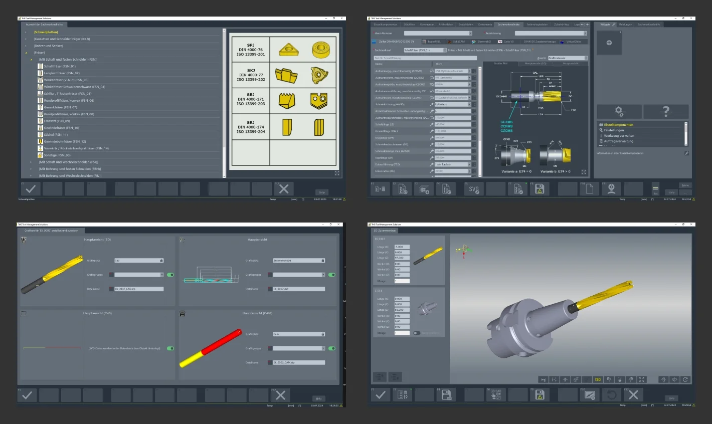

Datenanlage mit ZOLLER TMS Tool Management Solutions
Den Vorbehalten mittelständischer Fertigungsbetriebe gegenüber einer Digitalisierung der Werkzeugorganisation und -verwaltung begegnet Christoph Zoller, Geschäftsführer des Familien- und Technologie-unternehmens für wirtschaftliches Handling von Zerspanungswerkzeugen E. Zoller GmbH & Co. KG in Pleidelsheim: „Mit unserer Software TMS Tool Management Solutions übernehmen Anwender Daten auf Tasten-druck aus individuellen Tabellen, Katalogen und aus dem Internet.“ Damit schaffen sie schnell und komfortabel die Basis für eine weitreichende Digitalisierung der internen Prozesse rund um den Einsatz spanender Werkzeuge.
Wenig Aufwand, umfassende Vorteile
Zu den herausragenden Vorteilen digitalisierter Werkzeugverwaltung gehören:
- Transparenz
- schnelles Finden von Werkzeugen
- jederzeit und überall aktuelle, korrekte Werkzeugdaten
- optimierter Werkzeugbestand
- minimierter Aufwand in Beschaffung, Logistik und Lager
- höchste Prozesssicherheit
Von diesen Vorteilen profitieren sämtliche an der Fertigung beteiligten Bereiche: der Einkauf, die CAD-Konstruktion, die CAD/CAM-Programmierung, die Werkzeugvorbereitung mit Messen, Einstellen, Montage und Demontage, das Werkzeuglager sowie die Maschinen-einrichter. Die Fertigung selbst minimiert Stillstandszeiten und Risiken von Schäden an Maschinen und Werkzeugen durch Crash.
Flexible Übernahme von Stammdaten
Zum Anlegen von Stammdaten für eine digitalisierte Werkzeugver-waltung sagt Robin Bender, Projektmanager für die Software TMS Tool Management Solutions bei ZOLLER: „Unsere Software lässt sich flexibel den jeweiligen Forderungen entsprechend einsetzen. Stammdaten können beispielsweise aus den häufig genutzten Tabellen der Standard-software Excel einfach und schnell übernommen werden.“ ZOLLER stellt dafür eine standardisierte Tabelle (ein Template) zur Verfügung. Aus dieser liest die Software TMS Tool Management Solutions Werkzeug-daten innerhalb kürzester Zeit ein und speichert sie in den vorgesehenen Datenfeldern. Die Daten individuell vorhandener Tabellen sind lediglich passend zur Standardtabelle von ZOLLER zu konvertieren, also in die jeweiligen Spalten zu schreiben. „Selbstverständlich unterstützen wir unsere Kunden mit einer Konvertierungssoftware. Dazu benötigen wir lediglich die Formatierungen der individuellen Tabellen. Dann gelingt das Übertragen der Werkzeugdaten in unsere Software zur Werkzeug-verwaltung auf Tastendruck“, erläutert Robin Bender.
Hunderte Werkzeuge auf einen Streich
Als eine weitere sehr komfortable und schnelle Methode zur Datenübernahme bezeichnet Robin Bender das Einlesen über die Internetplattform ToolsUnited von Cimsource in Aachen (www.cimsource.com). Sie wird direkt unter der ZOLLER-Software aufgerufen. „Dort stehen vor allem Standardwerkzeuge von einer Vielzahl international tätiger Werkzeughersteller zur Auswahl. Man kann per Mausklick jeweils individuell wählen und die Datenübernahme starten“, berichtet Robin Bender.
Schnittstelle für Direktimport
In der Software von ZOLLER ist dafür eine Schnittstelle integriert. Über sie lassen sich einzelne Werkzeuge anhand der Artikelnummern der Hersteller übernehmen. Wahlweise kann man nach Bearbeitungs-verfahren auswählen und umfassende Listen anzeigen lassen. Anhand weiterer Kriterien – beispielsweise Durchmessern, Längen, Schneiden-anzahl – verfeinert man die Auswahl. Auf Tastendruck werden die ausgewählten Werkzeuge in die Software TMS Tool Management Solutions importiert. Dabei ist lediglich eine individuelle Identnummer anzugeben.
Werkzeuglisten einlesen
Wahlweise ist dies für komplette Werkzeuglisten automatisiert möglich. Das ermöglicht bei minimalem Aufwand innerhalb kürzester Zeit eine umfassende Auswahl an Standardwerkzeugen in die Software zur Werkzeugverwaltung einzupflegen. Besonders vorteilhaft ist, dass von den Herstellern standardisierte Parameter der Werkzeuge und auf Wunsch auch 3D-Grafiken für aktuelle CAD/CAM-Programmier- und Simulationssysteme enthalten sind. Beim Investieren in die Software von ZOLLER ist lediglich eine (jeweils zeitlich befristete) Lizenz für die Internetplattform ToolsUnited zu beschaffen.
Direkt vom Hersteller
Arbeiten Fertigungsbetriebe überwiegend mit Werkzeugen nur eines oder weniger Hersteller, lohnt sich auch eine automatisierte Datenübernahme direkt aus deren digitalen Katalogen im Internet. Allerdings ist eine Datenübernahme davon abhängig, welche Möglichkeiten die jeweiligen Hersteller bereitstellen. Dazu sagt Robin Bender: „Manche Werkzeug-hersteller stellen ausschließlich gesamte Kataloge als Datensatz zur Verfügung, andere bieten auch Auswahlkriterien, beispielsweise nach Sachmerkmalen. Bei letzteren kann man individuell vordefinierte Listen an Werkzeugen übernehmen.“ Dies gelingt, da die Stammdaten der Werkzeuge weitgehend normiert gespeichert und bezeichnet sind.
Individuelles Editieren
Robin Bender ergänzt: „Selbstverständlich können Fachkräfte die automatisch eingepflegten Werkzeugdaten in der ZOLLER-Software individuell weiter bearbeiten. So kann man über die Editierfunktion eigene Stammdatennummern vergeben oder zusätzliche Felder zur Auswahl von Listen anfügen.“
Einzeln definieren speziell für Sonderwerkzeuge
Arbeiten Fertigungsbetriebe mit individuellen Werkzeugen, lassen sich diese in der Software TMS Tool Management Solutions über Eingabe-felder mit einer Vielzahl an Parametern und Kriterien definieren und speichern. „Zunächst wählt das Personal ein Bearbeitungsverfahren für das anzulegende Werkzeug, zum Beispiel Fräsen. Dann erhält es ein Stammdatenblatt für Fräswerkzeuge auf dem Bildschirm. Dort sind die für diese Werkzeugkategorie festzulegenden Geometrien und Parameter enthalten,“ berichtet Robin Bender.
Zu Beginn ist eine Identnummer zu vergeben, anschließend die Daten, die das jeweilige Werkzeug beschreiben. Robin Bender sagt dazu: „Vorteil unserer Toolmanagement-Software ist, dass nicht unbedingt individuell zu bestimmende Daten bereits mit Standardwerten angegeben sind. Um ein Werkzeug ausreichend für den Gebrauch in der Werkzeug-verwaltung zu definieren, reichen deshalb meist wenige Parameter aus.“ Dazu gehören beispielsweise einige grundlegende Abmessungen. Weitere Details, zum Beispiel Freiwinkel an Schneiden und ähnliche Geometrien, kann man später exakt angeben, soweit das für den Einsatz in CAD/CAM-Systemen, in der Voreinstellung und auf CNC-Maschinen erforderlich ist.
Plausibilitätsprüfung inklusive
Diese einzelne Dateneingabe steht in der Software TMS Tool Management Solutions wahlweise für Monoblockwerkzeuge, beispiels-weise VHM-Fräser, und für zusammengesetzte Komplettwerkzeuge zur Verfügung. Bei letzteren sorgen automatische Prüfungen auf Plausibilität nach DIN 4000 dafür, dass nur sinnvolle und technisch realisierbare Komplettwerkzeuge vorgegeben und gespeichert werden. Damit sorgt die Software von ZOLLER für höchste Prozesssicherheit.
Komplettwerkzeuge aus vorhandenen Komponenten anlegen
Sind in der Software zur Werkzeugverwaltung bereits Komponenten enthalten, lassen sich Komplettwerkzeuge teilweise automatisiert erstellen. Dazu wählt das Personal lediglich die gewünschten Kompo-nenten, zum Beispiel Werkzeugaufnahme, Spannzange und VHM-Bohrer. Nach dem Prüfen auf passende Geometrien setzt die Software von ZOLLER automatisch das Komplettwerkzeug zusammen. Zum Speichern gibt man eine Stammnummer vor und legt damit einen eigenen Datensatz an. Automatisiert erstellt die Software zur Werkzeug-verwaltung ein 3D-Modell (Volumenmodell) zum CAD/CAM-Programmieren und -Simulieren.
Qualifizierter Service von Spezialisten
Beim Installieren der Software TMS Tool Management Solutions sowie beim Auswählen und Erstellen von Stammdaten unterstützen selbst- verständlich die Spezialisten von ZOLLER Fachkräfte in Fertigungs-
betrieben. „Wir wollen insbesondere kleineren Unternehmen den Weg ebnen zu einer umfassenden Digitalisierung mit allen Vorteilen. Dafür stellen wir unser weitreichendes Fachwissen und unsere Erfahrungen aus der industriellen Praxis zur Verfügung. Anwender können voll und ganz auf das Know-how unserer qualifizierten Experten vertrauen. Wir beraten ausführlich zu den jeweils optimalen Verfahren, Daten in unsere Software einzugeben. Zudem haben wir die Bedienung der Software weitgehend intuitiv gestaltet. Somit kann auch im Umgang mit Software wenig erfahrenes Personal nach minimalem Training innerhalb kürzester Zeit unsere Software zur Werkzeugverwaltung erfolgreich und profitabel einsetzen,“ hebt Christoph Zoller hervor.